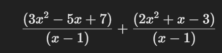
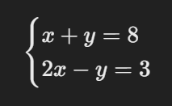

tiempo restante del examen: 120:00
1. ¿Cuál es la raíz cuadrada de 144?
2. ¿Cuál es el elemento químico con el símbolo H?
3.¿Cuál es el valor de x en la ecuación 2x-4=12?
4.Si un triángulo tiene una base de 5 cm y una altura de 12 cm, ¿cuál es su área?
5.Si 3x + 5 = 20, ¿Cuál es el valor de x?
6.¿Cuál es el valor de √81?
7.¿Si un círculo tiene radio de 5 cm, ¿cuál es su área?
8.¿Cuál es el determinante de la matriz ∣ 2/4 3/5∣ ?
9.¿Si f(x) = 2x². + 3x +5,¿Cuál es el valor de f(2)?
10.Si x² + 6x +5 = 0¿cuáles son las raíces de la ecuación?
11.¿¿Cuál es el valor de lim𝑥→0 sin𝑥/𝑥?
12.¿Si el logaritmo de 𝑥 en base 2 es 3, es decir, log2 𝑥 = 3 ¿Cuál es el calor de x?
13.Si 𝑓(𝑥)= 𝑥³ - 3𝑥² + 2𝑥 ¿cuál es la derivada de 𝑓(𝑥)
14.Si 𝑎 + 𝑏 = 8 y ab = 15, ¿Cuál es el valor de 𝑎² + 𝑏²?
15.Factoriza la expresión 𝑥³ - 6𝑥² + 11𝑥 - 6
16. Resuelve la ecuación cuadrática 2𝑥² - 5𝑥 - 2 = 0
17.Si 𝑥 + 1/𝑥 = 4 ¿Cuál es el valor de 𝑥² + 1/𝑥²?
18. Si 3𝑥 - 2y = 5 y 𝑥 + 4y = 10 ¿Cuál es el valor de x + y?
19.¿Cuál es el mínimo común múltiplo (MCM) de 18, 24 y 36?
20. La suma de los divisores de 28 es:
21.Si un número es divisible por 6 y 9, ¿cuál es el menor número que cumple esta condición?
22.Un número de 3 cifras es tal que la suma de sus cifras es 9 y la suma del cuadrado de sus cifras es 41. ¿Cuál es el número?
23.Un tren de 150 metros de largo pasa un poste en 10 segundos. ¿A qué velocidad (en km/h) viaja el tren?
24. Si la suma de tres números consecutivos es 147, ¿cuál es el número del medio?
25. Un tanque tiene dos llaves: la primera lo llena en 5 horas y la segunda en 3 horas. Si ambas llaves se abren al mismo tiempo, ¿en cuánto tiempo se llena el tanque?
26. Un agricultor tiene pollos y ovejas. Si cuenta 40 cabezas y 120 patas, ¿cuántas ovejas tiene?
27. Un número multiplicado por su inverso da 1. Si sumamos 4 al número original, obtenemos 5. ¿Cuál es el número?
28. Si un reloj se adelanta 3 minutos cada hora, ¿cuánto se adelanta en 24 horas?
29.Un ciclista recorre 100 km a una velocidad de 25 km/h y luego 100 km a 50 km/h. ¿Cuál es su velocidad promedio?
30. Si un número es aumentado en un 25% y luego reducido en un 25%, ¿cuál es el cambio neto en porcentaje?
31. En una urna hay 5 bolas rojas, 7 bolas azules y 8 bolas verdes. ¿Cuál es la probabilidad de sacar una bola que no sea azul?
32. Un número es un cuadrado perfecto si:
33. Si un número es divisible entre 2 y 3, ¿también es divisible entre...?
34.Un número es reducido en un 20% y luego aumentado en un 20%. ¿Cuál es el cambio neto?
35. Si x + y = 10 y xy = 24 ¿Cuál es el valor de x² + y²?
36.Si la diferencia de los cuadrados de dos números consecutivos es 25, ¿cuál es la suma de esos números?
37. ¿Cuántos números de 4 cifras existen donde la suma de sus dígitos es 10?
38. Un número es aumentado en 50% y luego reducido en 40%. ¿Cuál es el porcentaje total de cambio?
39.Un triángulo rectángulo tiene lados de 7 cm, 24 cm y 25 cm. ¿Cuál es su área?
40. Si la suma de tres números es 180 y están en una proporción de 2:3:5, ¿cuál es el mayor número?
41. ¿Cuál es el valor de la siguiente expresión:
cuando x=2?
42. Si 𝑥³ + y³ = 27 y 𝑥 + y = 3 ¿Cuál es el valor de 𝑥y?
43.Resuelve el sistema de ecuaciones:
44. Si la función 𝑓(𝑥) = 2𝑥² − 3𝑥 + 4 ¿cuál es el valor de 𝑓(3)?
45.¿Cuál es el valor de 𝑥 en la ecuación 5/𝑥 = 15?
46. Si ( 𝑥 - 2)(𝑥 + 3) = 0¿cuáles son los valores de 𝑥?
47. Si 2𝑥 + 4 = 12 ¿Cuál es el valor de 𝑥?
48. ¿Cuál es el área de un triángulo con base 8 cm y altura 5 cm?
49. ¿Cuál es el valor de 9²
50.¿Cuál es el valor de log2 32
51.La ecuación 𝑥² - 5𝑥 + 6 = 0 tiene como soluciones:
52.Resuelve el siguiente problema: Si la suma de dos números es 20 y su diferencia es 4, ¿cuáles son los números?
53. ¿Si 𝑓(𝑥) = 2 𝑥 + 3 ¿cuál es el valor de 𝑓(4)?
54.¿Cuál es el valor de 200×68?
.S5.5egún la teoría de la inteligencia emocional de Daniel Goleman, ¿cuál de los siguientes componentes NO pertenece a su modelo de inteligencia emocional?
56.¿Cuál de los siguientes filósofos influyó en la idea del "autoconocimiento" como clave del desarrollo personal?
57.En la pirámide de necesidades de Maslow, ¿en qué nivel se encuentra la necesidad de pertenencia y amor?
58. ¿Cuál de las siguientes NO es una estrategia efectiva para el manejo del estrés según la psicología positiva?
59. ¿Qué autor propuso el concepto de “mentalidad de crecimiento” en el desarrollo personal y la educación?
60.Según la teoría de la autodeterminación de Deci y Ryan, ¿cuál es un elemento fundamental para la motivación intrínseca?
61. ¿Cuál de los siguientes NO es un tipo de personalidad según la teoría de los cinco grandes rasgos de personalidad?
62. ¿Qué técnica psicológica se usa comúnmente para cambiar patrones de pensamiento negativos y mejorar la autoestima?
63. ¿Cuál de las siguientes afirmaciones sobre la resiliencia es FALSA?
64. ¿Qué concepto describe la habilidad de postergar la gratificación para alcanzar objetivos a largo plazo?
65. ¿Cuál de las siguientes estrategias es más efectiva para la gestión del tiempo según la técnica Pomodoro?
66.¿Qué teoría explica que el comportamiento humano es influenciado por la percepción de autoeficacia?
67.Según Viktor Frankl, ¿qué es esencial para encontrar sentido en la vida?
68. ¿Qué tipo de mentalidad fomenta el miedo al fracaso y evita los retos difíciles?
69. ¿Qué habilidad está directamente relacionada con la capacidad de empatizar con los demás?
70. ¿Cuál es el primer paso en el proceso de cambio personal según Prochaska y DiClemente?
71. ¿Qué es el locus de control?
72. ¿Qué tipo de meta es más efectiva para el crecimiento personal?
73. ¿Cuál de los siguientes es un síntoma de la procrastinación crónica?
74. ¿Cuál es el principal beneficio del journaling (llevar un diario personal)?
75. Según la teoría del autodiscurso positivo, ¿qué impacto tiene en el rendimiento personal?
76. ¿Cuál de los siguientes hábitos puede fortalecer la fuerza de voluntad a largo plazo?
77. Según la teoría del flujo de Mihály Csíkszentmihályi, ¿qué condición es clave para entrar en un estado de "flow"?
78. ¿Cuál de las siguientes es una característica de una mentalidad resiliente?
79. ¿Cuál de los siguientes NO es un factor de la motivación intrínseca según Deci y Ryan?
80. ¿Qué es el sesgo de confirmación y cómo afecta el desarrollo personal?
81. ¿Cuál de los siguientes conceptos se relaciona con la idea de "zona de confort"?
82. ¿Cuál de los siguientes hábitos puede reducir la procrastinación?
83. ¿Qué impacto tiene el "síndrome del impostor" en el desarrollo personal?
84. ¿Cuál de las siguientes técnicas se usa para cambiar hábitos negativos?
85.¿Cuál es la función principal de la metalingüística en la comunicación?
86. ¿Cuál de las siguientes características define un texto argumentativo?
87. ¿Qué figura retórica consiste en la repetición de sonidos al inicio de palabras consecutivas?
88.¿Cuál de las siguientes opciones representa un uso correcto de la cohesión textual?
89. ¿Cuál es la función del conector discursivo “sin embargo”?
90. ¿Qué tipo de comunicación ocurre cuando se transmite un mensaje a una gran audiencia sin interacción inmediata?
91. En la lingüística, el significante y el significado son conceptos propuestos por:
92. ¿Cuál de las siguientes es una característica de la función poética del lenguaje?
93. ¿Qué nivel del lenguaje se enfoca en el estudio del significado de las palabras y las oraciones?
94. En el proceso comunicativo, ¿cuál es el elemento que permite interpretar el mensaje de acuerdo con el contexto?
95. ¿Qué tipo de texto es aquel que tiene como objetivo principal exponer información de manera objetiva y estructurada?
96. ¿Cuál de las siguientes oraciones presenta un uso incorrecto del gerundio?
97. En el discurso indirecto, ¿cuál de los siguientes cambios es correcto?
98. ¿Cuál es el significado del término polisemia?
99. ¿Qué estrategia de lectura es más adecuada para obtener información específica de un texto extenso?
100. En un texto argumentativo, la parte donde se presenta la postura principal del autor se llama:
101. Si en un texto se menciona que “las estrellas titilan en la noche como si fueran ojos curiosos”, se está utilizando:
102. ¿Cuál de los siguientes elementos no pertenece a la estructura de un ensayo?
103. En la lectura crítica, ¿qué habilidad es fundamental?
104. ¿Cuál de las siguientes opciones representa una inferencia basada en el siguiente fragmento? "El cielo estaba oscuro y las hojas se movían con violencia. De repente, un trueno retumbó en el horizonte."
105. ¿Qué técnica de lectura consiste en identificar palabras clave y frases relevantes en un texto?
106. ¿Cuál de las siguientes oraciones es un ejemplo de oración unimembre?
107. ¿Qué tipo de relación semántica existe entre las palabras "mariposa" e "insecto"?
108. ¿Cuál de los siguientes enunciados presenta una construcción anacolútica?
109. En la oración "El joven artista es un genio del pincel", ¿qué figura literaria está presente?
110. ¿Cuál de las siguientes opciones es un caso de pleonasmo?
111. ¿Cuál de los siguientes textos pertenece al género dramático?
112. En la narración, ¿qué elemento determina la perspectiva desde la cual se cuenta la historia?
113. ¿Cuál de los siguientes términos define la omisión de una o más palabras sin que se altere el sentido del mensaje?
114. ¿Qué función del lenguaje predomina en un mensaje publicitario?
115. ¿Cuál de las siguientes oraciones contiene una perífrasis verbal?
116. En un texto argumentativo, ¿qué función cumple el contraargumento?
117. Si un texto menciona que "el amanecer era un lienzo dorado pintado por el sol", se está utilizando:
118. En la lectura inferencial, ¿qué habilidad se desarrolla principalmente?
119. Si un enunciado es ambiguo, significa que:
120. ¿Qué tipo de estructura presentan los textos narrativos?
121. En el siguiente texto, ¿qué tipo de conector falta en el espacio en blanco? "Quería salir a caminar, ____ empezó a llover y decidí quedarme en casa."
122. ¿Cuál de los siguientes factores puede afectar negativamente la comprensión lectora?
123. ¿Qué significa la expresión "leer entre líneas"?
124. ¿Qué tipo de texto es un editorial de periódico?
125. ¿Cuál es el propósito principal de un texto instructivo?
126. ¿Cuál de los siguientes es un sinónimo de "perspicaz"?
127. ¿Qué tipo de estructura argumentativa presenta una tesis al final del texto?
128. En la lectura analítica, ¿qué se prioriza?
129. ¿Qué función cumplen los paréntesis en un texto?
130. ¿Qué habilidad es clave para evaluar la validez de un argumento?
131. ¿Cuál de los siguientes elementos no es característico del lenguaje formal?
132. ¿Qué figura retórica consiste en la repetición de conjunciones para dar énfasis?
133. ¿En qué tipo de comunicación se da un intercambio inmediato de mensajes?
134. ¿Cuál de los siguientes enunciados presenta una anfibología?
135. Salimos de casa temprano para evitar el tráfico.
136. ¿Qué elemento caracteriza al lenguaje literario?
137. ¿Qué relación semántica existe entre las palabras "calor" y "frío"?
138. ¿Cuál de los siguientes enunciados es un ejemplo de hipérbaton?
139. ¿Qué se debe hacer en la lectura inferencial?
140. ¿Cuál de los siguientes títulos es el más adecuado para un ensayo argumentativo sobre la contaminación ambiental?
141. En un texto narrativo, ¿qué función cumple el desenlace?
142. ¿Qué tipo de texto tiene como propósito expresar sentimientos y emociones?
143. En la siguiente oración, ¿qué tipo de relación establecen las dos proposiciones? "No pude asistir a la reunión porque estaba enfermo."
144. ¿Cuál de las siguientes opciones es una paráfrasis correcta del siguiente enunciado? "La guerra es la continuación de la política por otros medios."
145. ¿Qué tipo de lectura permite identificar el tono y la intención del autor en un texto?
146. En la estructura de un texto argumentativo, ¿qué papel juega la conclusión?
147. Si un texto presenta un exceso de palabras innecesarias, se dice que tiene:
148. ¿Cuál de los siguientes elementos es esencial para la coherencia de un texto?
149. ¿Qué característica define a un texto objetivo?
150. Si un texto presenta ideas sin conexión lógica, se dice que carece de:
151. ¿Cuál de los siguientes ejemplos representa una falacia argumentativa?
152. ¿Cuál es la mejor estrategia para comprender textos complejos?
153. ¿Cómo se llama el recurso que consiste en repetir palabras al inicio de varios versos o enunciados?
154. ¿Qué tipo de texto sería más adecuado para enseñar el funcionamiento de un dispositivo tecnológico?
155. ¿Cuál de las siguientes palabras es un ejemplo de homonimia?
156. En la oración "El calor del sol acariciaba su piel mientras la brisa marina susurraba melodías", ¿qué recurso literario predomina?
157. ¿Qué tipo de falacia se presenta en el siguiente argumento? "Mi profesor dijo que la Tierra es plana, por lo tanto, debe ser cierto."
158. ¿Cuál de los siguientes conectores indica una relación de contraste?
159. ¿En qué tipo de texto predominan la descripción y el uso de detalles sensoriales?
160. ¿Qué característica distingue a un texto subjetivo?
161. What is the correct indirect question form of: "Where does she live?"
162. Elige la oración con el uso correcto del past perfect tense:
163. ¿Cuál de las siguientes oraciones usa correctamente un condicional invertido?
164. Identify the sentence with a dangling modifier:
165. ¿Cuál es la forma correcta de la oración en discurso indirecto? "I don't like spicy food," she said.
166. Choose the sentence that correctly uses a relative clause:
167.¿Cuál es el uso correcto de un tercer condicional?
168. Which of the following is a correct example of subject-verb inversion?
169. ¿Qué significa la expresión "to be on the fence"?
170. Choose the sentence with parallel structure:
171. ¿Cuál es el significado del phrasal verb "call off"?
172. Which of the following words contains a silent letter?
173. ¿Cuál es la forma en voz pasiva de: "They built this bridge in 1990."
174. What is the correct form of a mixed conditional?
175. ¿Cuál de las siguientes oraciones usa correctamente un causative verb?
176. What is the correct comparative form of "little"?
177. ¿Cuál de las siguientes opciones es un collocation correcto?
178. What does the phrase "cut to the chase" mean?
179. ¿Cuál es la forma superlativa de "far"?
180. Which of the following is an example of an idiom?
181. ¿Cuál es la forma correcta del Passive Voice en el siguiente enunciado? "They have completed the project."
182. Choose the correct preposition: "She apologized ___ arriving late."
183. ¿Cuál de las siguientes oraciones usa correctamente el Mixed Conditional?
184. Select the correct relative clause sentence:
185. ¿Cuál es el phrasal verb correcto para "revisar un documento o tarea"?
186. Choose the correct idiom meaning "keep a secret":
187. ¿Cuál es la forma correcta en Reported Speech? "She said, 'I will call you tomorrow.'"
188. What is the correct negative inversion of this sentence? "She had never seen such a beautiful place."
189. ¿Cuál es la opción correcta en Conditional Sentences Type 2?
190. Complete the sentence: "By the time you arrive, I ___ dinner."
191. Un bloque de 2 kg se desliza sobre una superficie horizontal sin fricción con una velocidad de 4 m/s. Luego, choca con un resorte de constante elástica 200 N/m. ¿Cuál es la máxima compresión del resorte?
192. Si un gas ideal se expande isotérmicamente y su volumen se duplica, ¿qué sucede con su presión?
193. La ecuación de continuidad en fluidos establece que:
194. Un objeto se encuentra a 20 cm de una lente convergente de distancia focal 10 cm. ¿Dónde se formará la imagen?
195. En un circuito con una resistencia de 10 Ω y una batería de 20 V, ¿cuál es la corriente que circula?
196. La ecuación de Schrödinger en mecánica cuántica describe:
197. En una reacción nuclear de fisión, la energía liberada proviene de:
198. ¿Cuál de las siguientes NO es una función del catalizador en una reacción química?
199. La ley de Hess establece que:
200. ¿Cuál de las siguientes sustancias tiene mayor punto de ebullición?
201. Un objeto en caída libre experimenta una aceleración constante debido a:
202. Si duplicamos la distancia entre dos cargas eléctricas puntuales, la fuerza de atracción entre ellas será:
203. En un circuito de corriente alterna, el voltaje y la corriente están desfasados por 90°. ¿Qué componente produce este desfase?
204. El calor latente de vaporización del agua es de aproximadamente 2260 J/g. ¿Cuánta energía se necesita para vaporizar 10 g de agua?
205. Un gas ideal se encuentra a 2 atm de presión y 300 K. Si su temperatura aumenta a 600 K a volumen constante, ¿cuál será su nueva presión?
206. Si un ácido fuerte como el HCl se disuelve en agua, ¿qué sucede con el pH de la solución?
207. En la ecuación nuclear 238/92𝑈 → 234/90 𝑇ℎ + 𝑋, ¿qué partícula es X?
208. ¿Cuál de los siguientes enlaces es el más fuerte?
209. La ley de Boyle establece que, a temperatura constante, el volumen de un gas es:
210. ¿Qué ocurre en una reacción endotérmica?
211. Si un péndulo simple se encuentra en un ascensor en caída libre, ¿qué le sucede a su periodo de oscilación?
212. En una reacción química en equilibrio, ¿qué sucede si se aumenta la temperatura en una reacción endotérmica?
213. Un gas se expande contra un pistón, realizando 500 J de trabajo mientras absorbe 800 J de calor. ¿Cuál es el cambio en su energía interna?
214. Si la constante de Planck 6.626 ×10^-34 J⋅s,¿cuál es la energía de un fotón con una frecuencia de 5 x 10^14 Hz?
215 ¿Cuál es la única sustancia que existe en la naturaleza en los tres estados de la materia de manera común?
216. ¿Qué tipo de radiación ionizante tiene la menor capacidad de penetración?
217. Si duplicamos la distancia entre dos masas puntuales, la fuerza gravitatoria entre ellas se:
218. ¿Cuál de las siguientes NO es una propiedad coligativa de las soluciones?
219. La ecuación de Bernoulli se basa en la conservación de:
220. Si se introduce un gas ideal en un recipiente de volumen fijo y se calienta, ¿qué sucede con la presión?
221. ¿Qué modelo atómico propuso que los electrones orbitan el núcleo en niveles de energía cuantizados?
222. ¿Cuál de las siguientes leyes NO se relaciona con los gases ideales?
223. ¿Qué sucede con la velocidad de una onda al cambiar de medio si su frecuencia permanece constante?
224. Un isótopo de carbono tiene 6 protones y 8 neutrones. ¿Cuál es su número másico?
225. La ley de Faraday sobre la inducción electromagnética establece que:
226. Si un metal tiene una alta conductividad térmica, significa que:
227. En una batería galvánica, el ánodo es el electrodo donde ocurre:
228. En mecánica cuántica, el principio de incertidumbre de Heisenberg establece que:
229. ¿Cuál de los siguientes materiales tiene una estructura cristalina?
230. La velocidad de escape de un planeta es la velocidad mínima necesaria para que un objeto:
231. ¿Cuál es el principal objetivo del modelo de arquitectura en capas en redes de computadoras?
232.En programación concurrente, ¿qué mecanismo evita condiciones de carrera entre procesos?
233. ¿Qué tipo de base de datos es más eficiente para manejar grandes volúmenes de datos no estructurados?
234. En seguridad informática, ¿cuál de los siguientes ataques explota la inyección de código malicioso en formularios web?
235.¿Qué protocolo se utiliza para asignar direcciones IP dinámicamente en una red?
236 ¿Cuál es una ventaja del modelo de microservicios sobre una arquitectura monolítica?
237. En el modelo OSI, ¿qué capa es responsable de la encriptación de datos?
238. En la arquitectura cliente-servidor, ¿qué componente procesa las solicitudes de los usuarios?
239. ¿Cuál de las siguientes opciones es una ventaja de la virtualización en servidores?
240. ¿Qué elemento se usa en redes para dividir un dominio de colisión?
241. ¿Qué técnica permite la detección y corrección de errores en la transmisión de datos?
242. ¿Cuál de los siguientes no es un modelo de computación en la nube?
243. ¿Qué protocolo se usa para garantizar la integridad y autenticación en conexiones seguras?
244. En bases de datos, ¿qué operación se usa para unir filas de dos tablas basadas en una condición común?
245. ¿Qué concepto describe la capacidad de un sistema para aumentar o disminuir recursos según la demanda?
246. En redes definidas por software (SDN), ¿cuál es la función principal de OpenFlow?
247. ¿Cuál es la principal ventaja del almacenamiento en objetos sobre el almacenamiento en bloques?
248. ¿Qué modelo de almacenamiento es utilizado en sistemas de archivos distribuidos como HDFS?
249. ¿Cuál es una característica clave de los sistemas operativos en tiempo real (RTOS)?
250. En la seguridad de aplicaciones, ¿qué técnica se usa para verificar que una entrada no contenga código malicioso?
251. ¿Qué modelo de inteligencia artificial es utilizado para procesamiento de lenguaje natural?
252. ¿Cuál es la principal ventaja del modelo de diseño CQRS en arquitectura de software?
253. ¿Qué técnica se usa para mejorar el rendimiento de acceso a datos en bases de datos relacionales?
254. ¿Qué tipo de ataque informático busca sobrecargar un sistema con tráfico malicioso?
255. En una arquitectura de microservicios, ¿qué patrón de comunicación es más eficiente para interacciones asincrónicas?
256. ¿Cuál es la ventaja principal de utilizar contenedores en lugar de máquinas virtuales?
257. ¿Qué solución es utilizada para la gestión de infraestructura como código (IaC)?
258. ¿Cuál de los siguientes protocolos es utilizado para la transferencia segura de archivos?
259. ¿Qué propiedad de los algoritmos de consenso en blockchain permite prevenir ataques de doble gasto?
260. ¿Cuál es la principal ventaja del uso de arquitecturas serverless?
261. ¿Qué tipo de sistema de archivos es más adecuado para manejar grandes volúmenes de datos distribuidos?
262. ¿Cuál es la función principal de un WAF (Web Application Firewall)?
263. ¿Cuál es una de las características principales de un balanceador de carga?
264. ¿Qué tecnología se usa para la automatización del despliegue de contenedores?
265. En el modelo de programación funcional, ¿qué principio es clave para evitar efectos secundarios en el código?
266. ¿Cuál es la principal ventaja de los modelos NoSQL en comparación con los SQL?
267. ¿Qué significa "autoscaling" en una arquitectura en la nube?
268. ¿Cuál de las siguientes es una técnica para mitigar ataques de denegación de servicio (DDoS)?
269. ¿Qué herramienta es usada para la automatización de infraestructura en la nube?
270.¿Cuál de las siguientes opciones describe un ataque "Man-in-the-Middle"?
271. ¿Qué protocolo es el estándar para la autenticación y autorización en sistemas distribuidos?
272. ¿Qué ventaja tiene el uso de la técnica de "sharding" en bases de datos?
273.¿Qué tipo de cifrado usa dos claves, una pública y una privada?
274. ¿Cuál es una característica clave de la computación edge en relación con la nube?
275.¿Cuál es la función principal de un "circuit breaker" en microservicios?
276. En redes, ¿qué protocolo se usa para asignar automáticamente direcciones IP en un entorno LAN?
277.¿Qué modelo de aprendizaje automático se basa en redes neuronales profundas?
278. ¿Cuál de los siguientes ataques se basa en engañar a los usuarios para que revelen información sensible?
279.¿Cuál de los siguientes servicios en la nube proporciona un entorno de desarrollo y ejecución de aplicaciones sin necesidad de administrar la infraestructura?
280. ¿Qué significa "immutable infrastructure" en DevOps?
281. ¿Cuál es el propósito de un Content Delivery Network (CDN)?
282 ¿Qué estrategia de seguridad informática protege los datos en caso de un ataque exitoso?
283.Cuál de los siguientes es un beneficio de la arquitectura orientada a eventos?
284.En Kubernetes, ¿qué componente se encarga de gestionar la ejecución de contenedores en los nodos del clúster?
285.¿Qué es una función hash en seguridad informática?
286. ¿Qué protocolo se usa para acceder de manera remota y segura a un servidor?
287.¿Cuál es la principal función de un IDS (Intrusion Detection System)?
288. En arquitectura de software, ¿qué patrón se usa para desacoplar productores y consumidores de eventos?
289.¿Qué ventaja ofrece el modelo Zero Trust en seguridad?
290. ¿Qué tipo de ataque explota vulnerabilidades en sistemas de control de versiones como Git?
291. ¿Cuál es el propósito del "rate limiting" en servidores web?
292. En bases de datos distribuidas, ¿qué problema resuelve el teorema CAP?
293. ¿Cuál de los siguientes es un beneficio de los contenedores sobre las máquinas virtuales?
294. ¿Cuál es la función de un load balancer en una arquitectura distribuida?
295. ¿Qué tipo de ataque aprovecha la inyección de código JavaScript en sitios web?
296. ¿Cuál es el objetivo de la práctica de CI/CD en DevOps?
297.¿Qué modelo de implementación en la nube combina recursos públicos y privados?
298. ¿Qué protocolo es más adecuado para la sincronización de tiempo en redes distribuidas?
299. ¿Qué característica define a los algoritmos de Machine Learning supervisados?
300. En términos de ciberseguridad, ¿qué significa "hardening" en un sistema?